/* mert-alas-marcus-piggott - proofs */
12 plates. Deterministic overlays rendered by the composition-analysis skill.
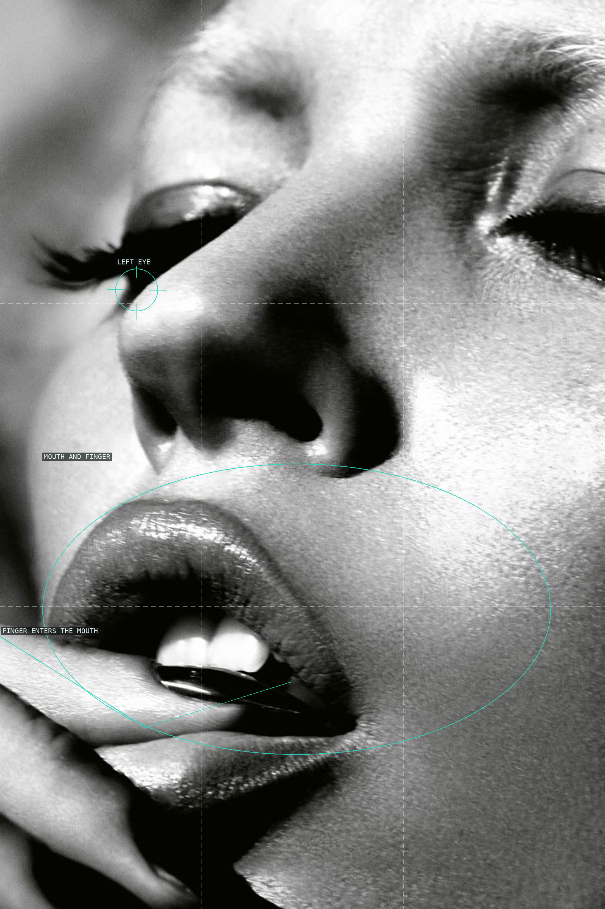
01-lips-2005
A cropped eye, mouth, and finger make the face read as a sequence of tactile details.
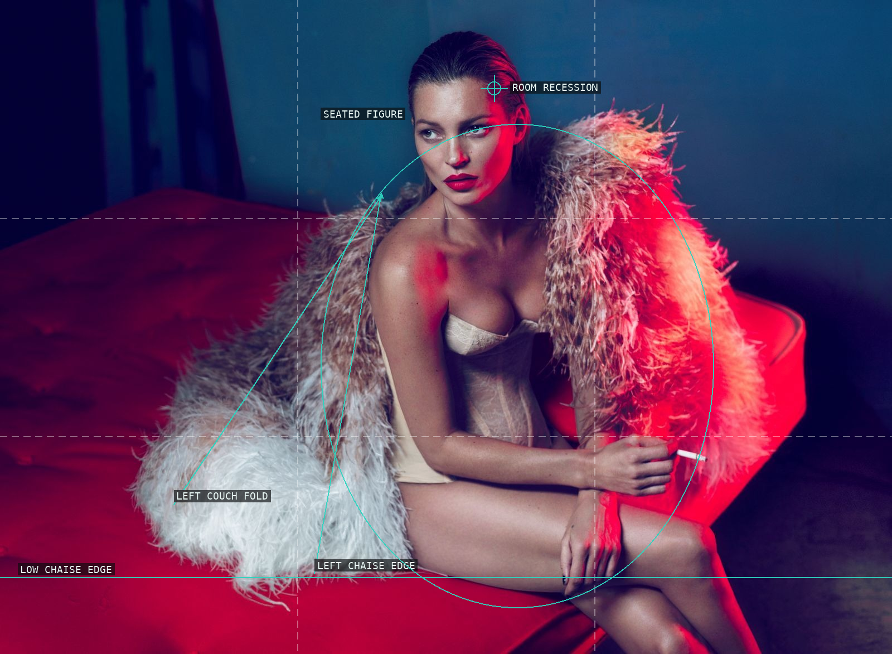
02-kate-moss-vogue-japan-2011
The chaise and blue room make a wide stage for the concentrated seated figure.
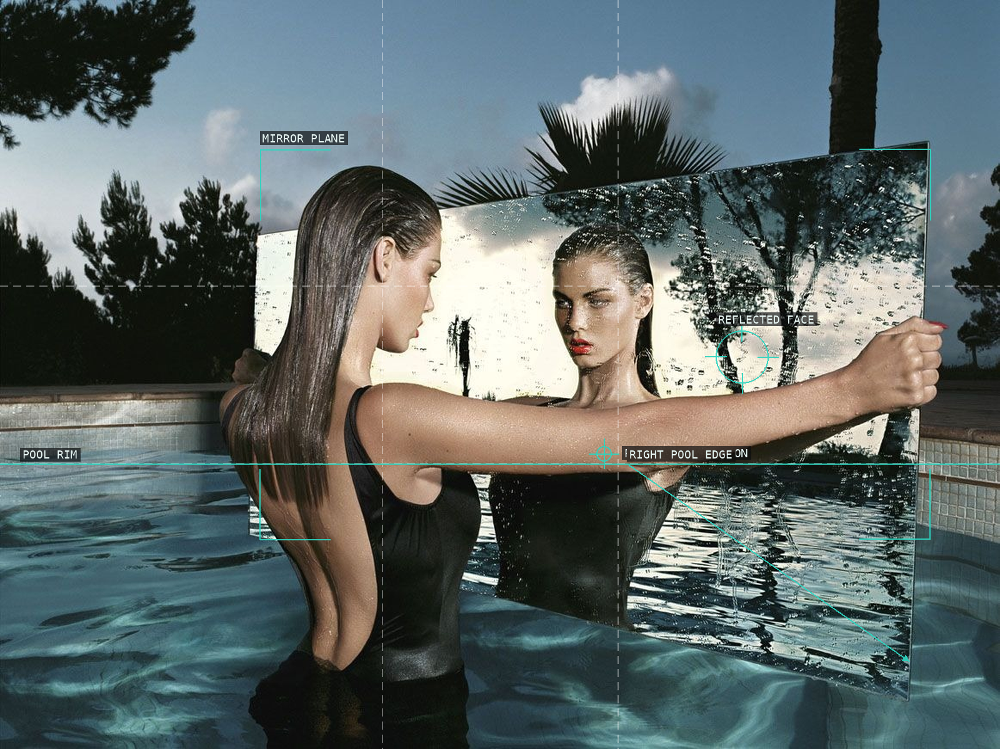
03-mirror-2002
The mirror doubles a single body and interrupts the pool with a second scene.
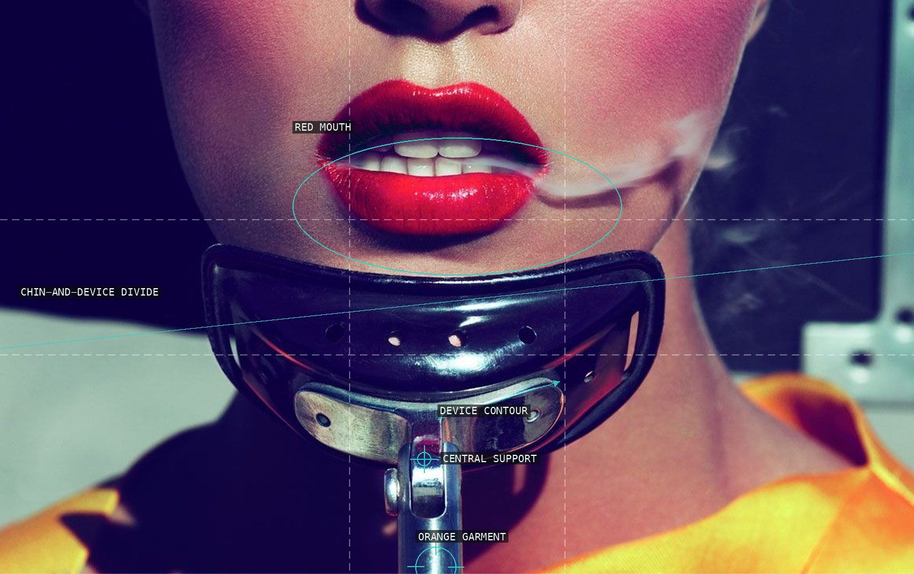
04-smoke-2011
A bright mouth, dark device, and smoke make the lower face a graphic stage.
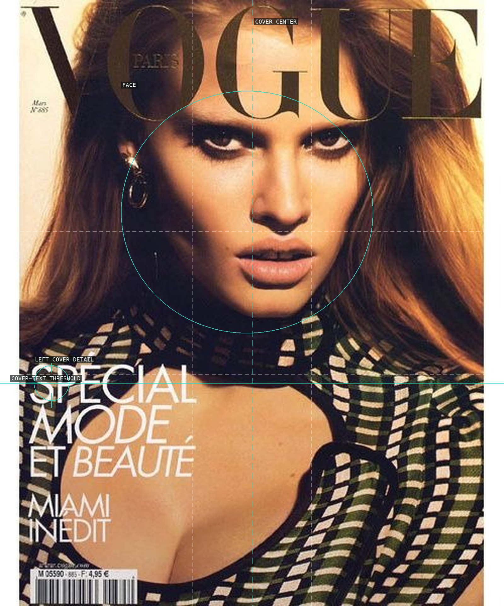
05-lara-stone-vogue-paris-2008
A frontal face holds the cover while hair and typography press from the edges.
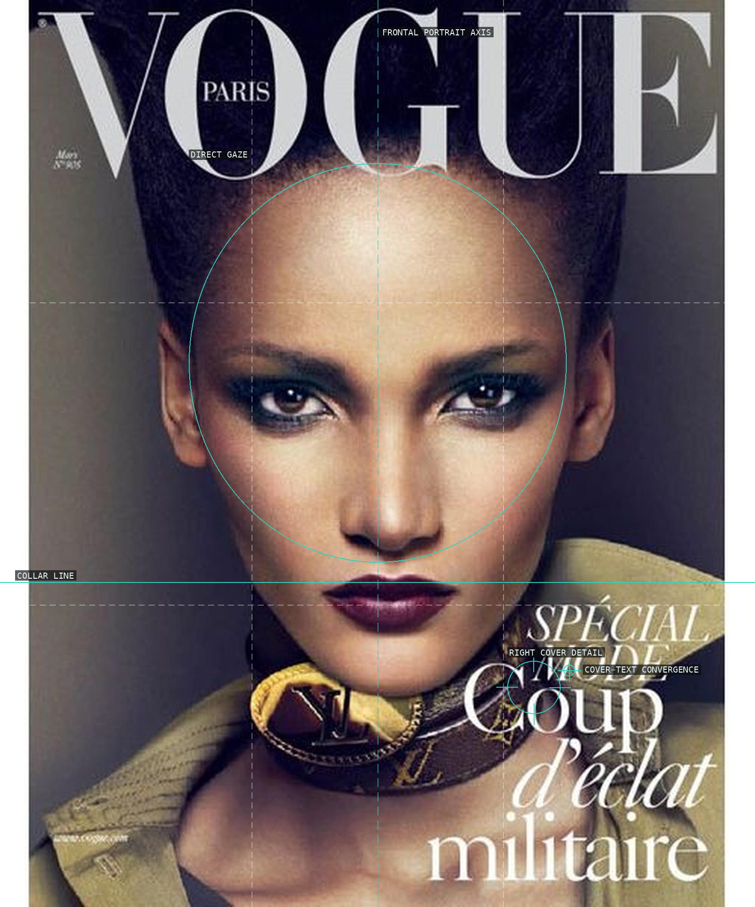
06-rose-cordero-vogue-paris-2010
A centered gaze and dark collar make the cover read as a compressed frontal icon.
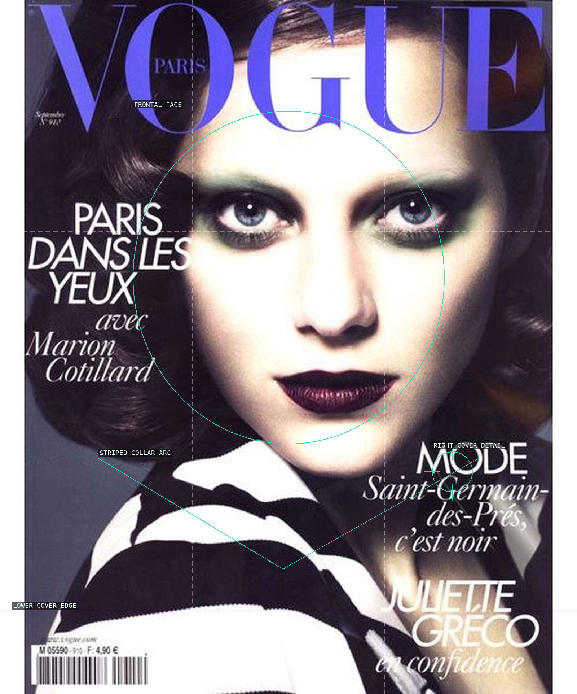
07-marion-cotillard-vogue-paris-2010
The pale frontal face is fixed against a dark striped collar and cool masthead.
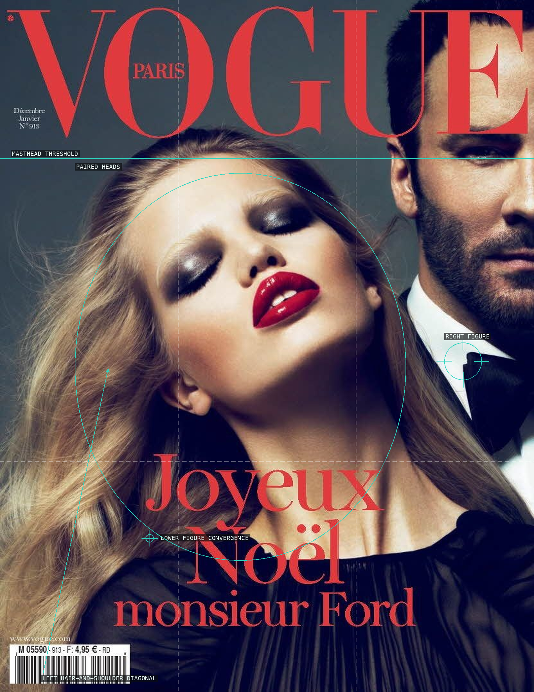
08-daphne-groeneveld-tom-ford-vogue-paris-2010
Two overlapping heads make a charged diagonal beneath the red cover type.
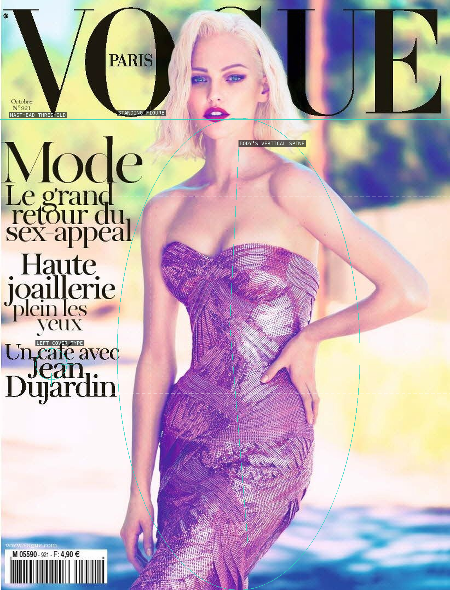
09-sasha-pivovarova-vogue-paris-2011
A standing body makes a vertical spine against a bright, shallow cover field.
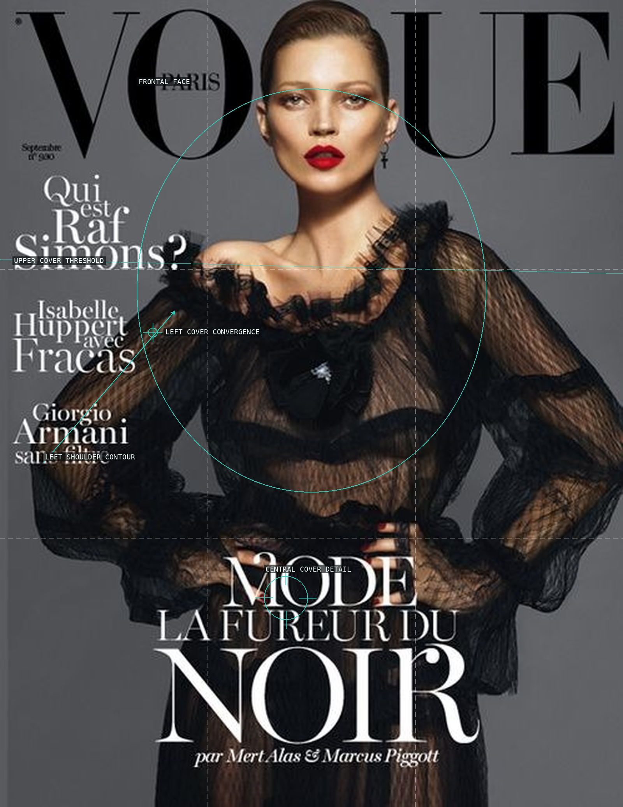
10-kate-moss-vogue-paris-2012
A centered face and graphic cosmetics turn the cover into a frontal plane.
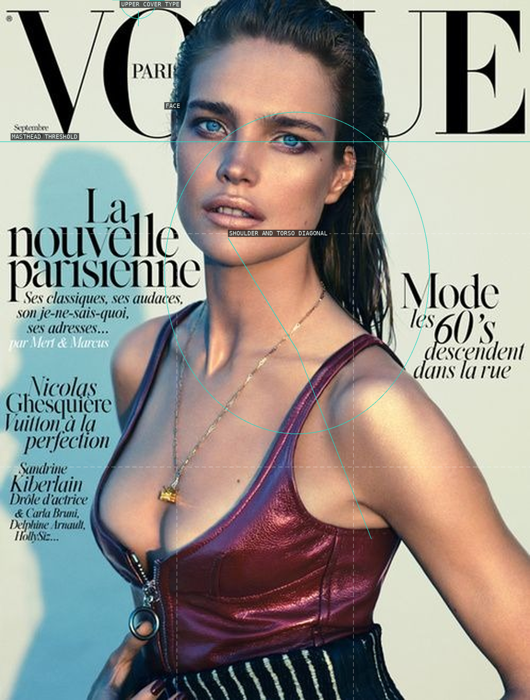
11-natalia-vodianova-vogue-paris-2014
A shifted head and shoulder sit beneath a rigid masthead and beside dense cover text.
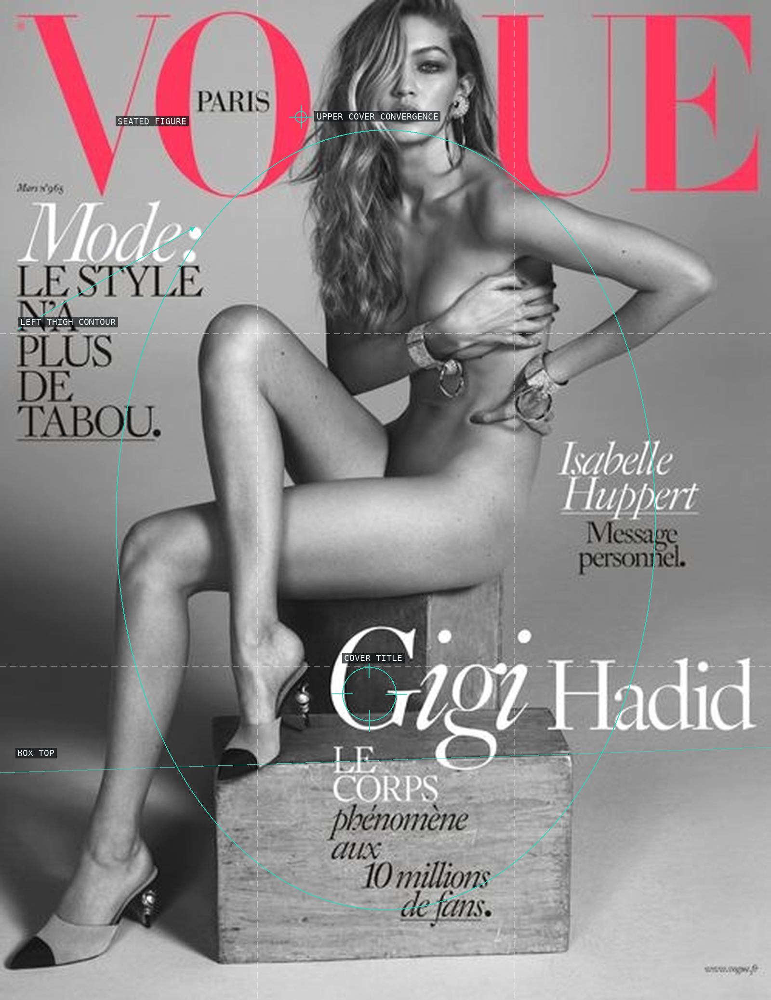
12-gigi-hadid-vogue-paris-2016
A bent body and box make a compact, sculptural cover arrangement.